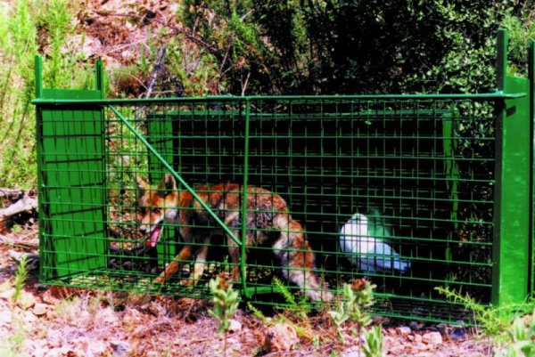

Decides arriesgarte. Podés agarrar la carnada y salir antes de que el humano llegue. Solo necesitás ser rápido.
Extiendes tu pata con rapidez y agarras la carnada. Por un segundo, pensás que lo lograste. Pero entonces escuchás el clic metálico.
La trampa se cierra. Tu pata queda atrapada dentro. Intentás liberarte pero el mecanismo es fuerte, diseñado para animales más grandes que vos. Cuanto más te movés, más te lastimás.
El pescador llega. Te ve atrapado y su expresión cambia de sorpresa a lástima. "Pobre zorro", dice en voz baja. Saca su radio y llama a control de animales.
Horas después, estás de vuelta en una jaula. No es el santuario de tu cuidadora, es un refugio municipal. Las paredes son frías, el suelo es de concreto, y aunque te van a curar la pata lastimada...
Perdiste tu libertad.
Después de todo lo que luchaste, de todo lo que ella luchó por vos, volviste al cautiverio. Esta vez quizás para siempre, porque un zorro que se mete en trampas humanas es considerado "problemático".
La libertad era frágil y la perdiste por impaciencia. A veces, la comida fácil tiene el precio más alto. Tu cuerpo sanará, pero tu espíritu quedó roto al volver a estar encerrado.
Si tan solo hubieras esperado, si hubieras sido más paciente...